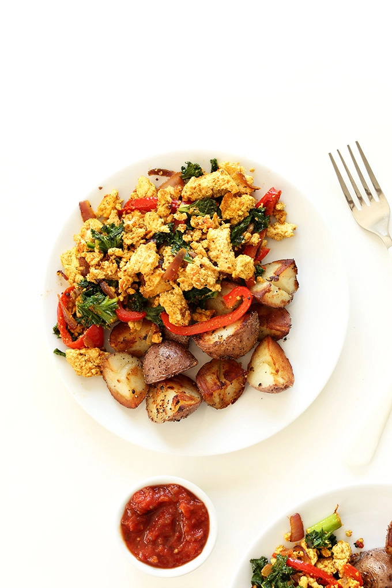

South West Tofu Hash

Recipe
A very yummy, quick to make, and healthy dish packed with nutrients and vitamins to start your day off right!
Hash
- 8 Ounces extra-firm tofu
- 1-2 Tbsp olive oil
- 1/4 red onion
- 1/2 red pepper
- 2 cups kale
Sauce
- 1/2 tsp sea salt
- 1/2 tsp garlic powder
- 1/2 tsp ground cumin
- 1/4 tsp tumeric
For Serving
- Salsa
- Cilantro
- Hot Sauce
- Breakfast Potatoes
Steps
- Pat tofu dry and roll in a clean, absorbent towel with something heavy on top, such as a cast-iron skillet, for 15 minutes.
- While tofu is draining, prepare sauce by adding dry spices to a small bowl and adding enough water to make a pourable sauce. Set aside.
- Prep veggies and warm a large skillet over medium heat. Once hot, add olive oil and the onion and red pepper. Season with a pinch each salt and pepper and stir. Cook until softened for about 5 minutes.
- Add kale, season with a bit more salt and pepper, and cover to steam for 2 minutes.
- In the meantime, unwrap tofu and use a fork to crumble into bite-sized pieces.
- Use a spatula to move the veggies to one side of the pan and add tofu. Sauté for 2 minutes, then add sauce, pouring it mostly over the tofu and a little over the veggies. Stir immediately, evenly distributing the sauce. Cook for another 5-7 minutes until tofu is slightly browned.
- Serve immediately with the breakfast potatoes, toast, or fruit. I like to add more flavor with salsa, hot sauce, and/or fresh cilantro. Alternatively, freeze for up to 1 month and reheat on the stovetop or in the microwave.